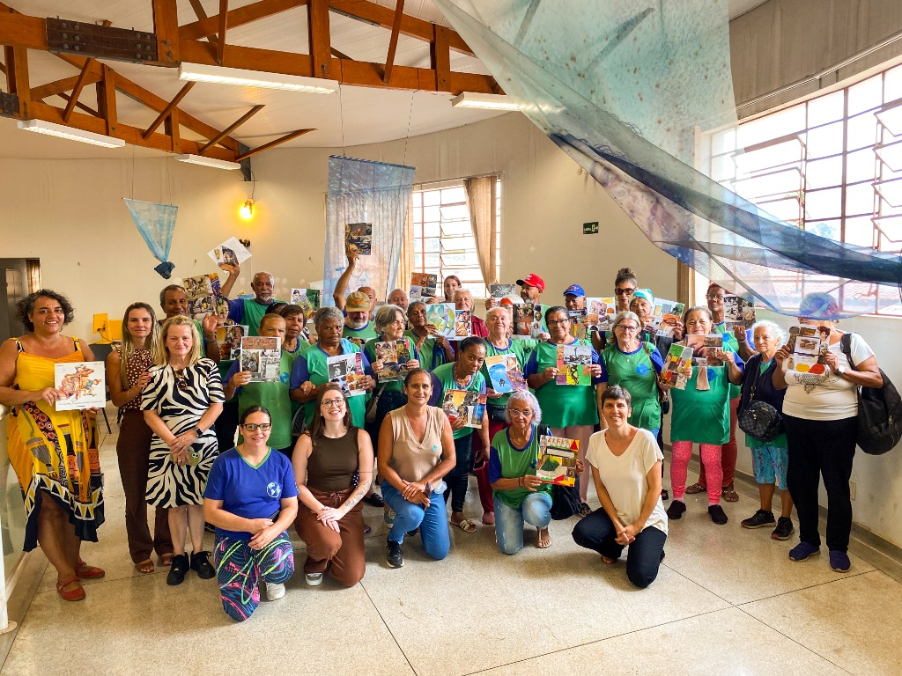
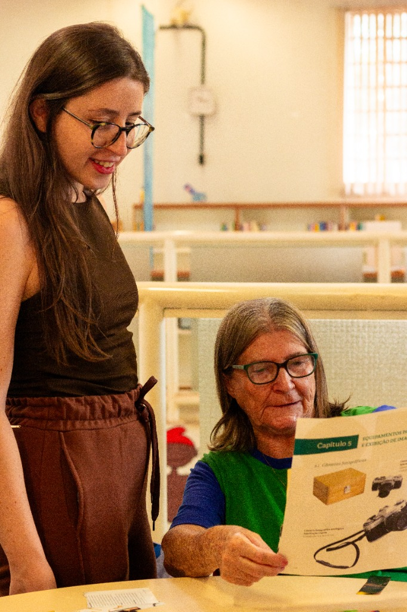
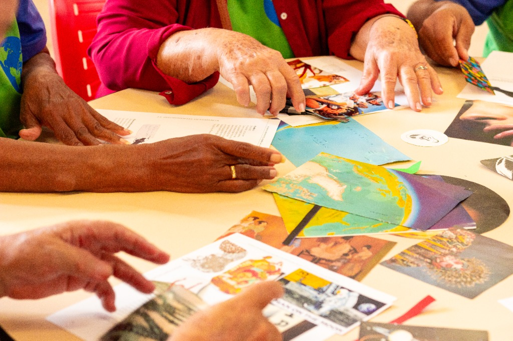
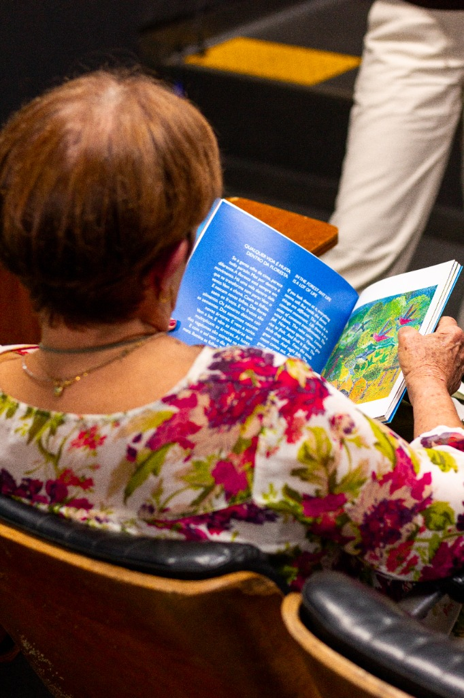

LITERATURA, TEMPO
E MEMÓRIA
Projeto de leitura e mediação desenvolvido com o público 60+, articulando literatura, memória e experiência estética por meio de encontros voltados à escuta, à conversa e à construção compartilhada de sentidos. As oficinas buscavam aproximar os participantes da literatura e do livro ilustrado como espaços de narrativa, lembrança e imaginação, valorizando as experiências e repertórios trazidos pelos próprios leitores.
Somos todos leitores?
Relato de experiênciaCheguei curiosa no CCI numa tarde quente de quinta-feira em outubro de 2025. Cheia de sacolas, cheia de livros. Meus novos alunos me olhavam ressabiados. Antes mesmo de começar a falar, alguns deles já se levantaram e vieram me explicar que tinham compromissos e não poderiam ficar na aula.
“O meu ônibus passa perto das 15h30, não posso perder esse senão o outro demora muito.”
“Tenho uma dor na perna e faço o tratamento com o pessoal da universidade. Eles vão vir me buscar aqui. Tenho que esperar.”
“Eu não sei ler. Não sei fazer nada disso.”
Fui pega de surpresa. No conforto dos meus privilégios e dos com quem eu até então havia trabalhado, o não saber ler só aparecia nas discussões acerca do que é a leitura, das tensões da alfabetização. Em suma, quando falava dos bebês e da primeira infância. Mas, ali, diante deles, segurando o livro nas mãos pronta para começar a mediação, me dei conta de que aquele espaço e aquele grupo exigiria algo diferente de mim.
Eles não precisavam ler no sentido mais restrito da decodificação para participar das minhas aulas. Na mediação, eu os convidava para participar de uma leitura em conjunto. Para que, juntos, construíssemos sentidos e desvendassemos as camadas e caminhos daquela história. De todo modo, a frase que fundava a recusa insistia em aparecer: eu não sei ler, não sei fazer nada disso.
Aos poucos fui compreendendo que o não saber ler era um algo muito mais profundo. Eles não se aproximavam fisicamente dos livros. Toda semana eu levava alguns livros a mais e deixava numa mesa para que eles manuseassem livremente. Do mesmo modo que eu os organizava no início era como eu os encontrava no final da aula. Havia uma biblioteca no Centro também, cujos livros existiam imobilizados nas prateleiras.
Diante disso, insisti. Continuei a levar semanalmente livros extras. Comecei a emprestar livros da biblioteca para meu uso pessoal e a contar para eles sobre essas histórias. Assim, começamos a construir nossa relação. Aos poucos, os olhares ressabiados foram dando lugar aos abraços na minha chegada. As cadeiras foram ficando menos separadas no momento da nossa roda de leitura. Fomos nos aproximando interna e externamente, de forma material e imaterial. Foi então que as narrativas começaram a encontrar passagem.
Nas vésperas do dia das bruxas, resolvi levar contos da Angela Lago sobre assombrações e almas penadas. Eles ouviram atentamente e se divertiram com os finais cômicos. Começaram a lembrar dos causos que ouviam na infância, de coisas que aconteceram com eles. Assim, tive a alegria imensa de passar uma tarde ouvindo histórias de contadores e contadoras natas. No final, escolheram um deles e eu assumi o papel de escriba para registrar palavra por palavra. Assim nascia o nosso primeiro livro intitulado Uma visita inesperada. Sabe que eles ilustraram algumas partes do conto e tivemos a montagem do livro em formato acordeão. Ficou lindo. Volto nessa parte depois.
Escolher um livro para ser mediado não é uma tarefa simples para mim. É uma busca por encontrar aquele que me encanta ou estranha e que eu, na posição de mediadora, julgo encantar ou estranhar meus leitores. Selecionar livros para esse grupo foi, sem dúvida, a maior tarefa de aprendizagem que tive em tempos. Eu desejava que eles imaginassem, que saissem por um instante do concreto e da realidade imediata. Que se permitissem viver outras vidas nas breves horas que passavamos juntos semanalmente.
Muito se fala do gosto do leitor, mas como pensar no que os interessava quando nem próximo da mesa de livros eles chegavam? Comecei a testar de tudo un pouco: formatos diferentes, ilustrações diversas, às vezes livros que eu nem julgava pertencerem à minha pequena bolha curatorial de livros lindos-maravilhosos. Comecei a buscar mais, a ouvir mais. Observar mais cada reação durante a mediação.
Um dia chegamos numa história sobre um fura coco. A ilustração mesclava fotografia e colagem. O texto cantava em rimas. Passamos quase uma hora em torno desse livro. Todo mundo tinha algo para falar e eu muitas coisas para ouvir. Ainda me emociono de lembrar da cena de uma aluna pedindo para ver o livro nas próprias mãos. Ela me perguntou se tudo que estava ali era o que eu tinha lido pra eles. Disse que sim. Ela me respondeu com um sorriso. Começamos a planejar uma competição para furar cocos com os objetos mais inusitados. Ainda está nas vias do planejamento. Mais tarde volto para contar.
Algum tempo depois, fomos visitar bibliotecas públicas da cidade. Acho que mesmo já passado meses da primeira visita, ainda não sei descrever com total clareza o que senti quando os vi sentados entre os livros, ouvindo a mediação feita por uma bibliotecária que admiro, com insistentes braços no ar perguntando quando poderiam andar pela biblioteca e ver os livros. Muitos deles ainda não leêm no sentido da decodificação, mas eu insisto em chamá-los de leitores. Somos todos leitores da palavra, da imagem e do mundo, digo em nossas manhãs de quinta-feira.
Vou cair em um clichê dizendo que essa turma me transformou enquanto mediadora, enquanto leitora. Mas, poxa, estaria mentindo se não dissesse exatamente isso. Eu gosto da literatura porque ela desloca minhas certezas e me aloja num território de dúvidas. Às vezes ela me oportuniza isso diretamente no livro, num encontro singular entre eu e ele. Outras vezes ela me dá a chance de vivenciar isso ao apresentar os livros para as outras pessoas. Ah, que alegria quando isso acontece!


